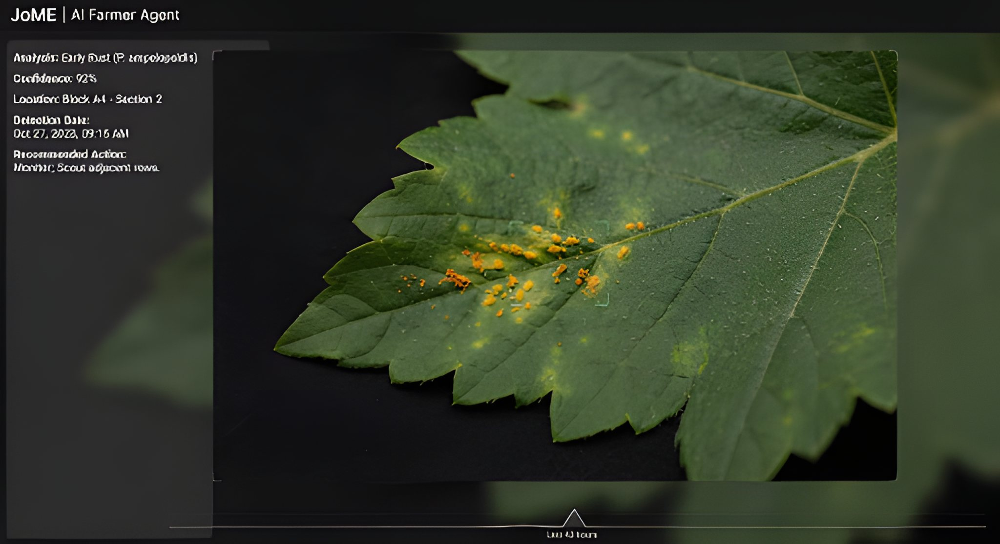

Agronomist Copilot
System online. All sensors nominal.
!
Low phosphorus detected in Zone 3.
Variance: −14% below baseline. Root development at risk.
J
Optimal harvest window: 3 days
Block C grapes reaching target Brix levels.
Can you analyze this leaf scan from Block C?

J
Pathogen detected
Early leaf rust
89%
Apply copper-based fungicide spray during the next dry window. Isolate affected vines if possible to prevent spore drift.
J
Good morning. Soil moisture in Sector Alpha has dropped to 22%. Based on the current heat index forecast, I recommend initiating a supplemental drip cycle before 14:00.
Run a simulation if we delay that cycle by 24 hours.
J
Delay Sector Alpha schedule by
24 hours
−12% yield risk
Evapotranspiration rate exceeds soil retention capacity over this duration.